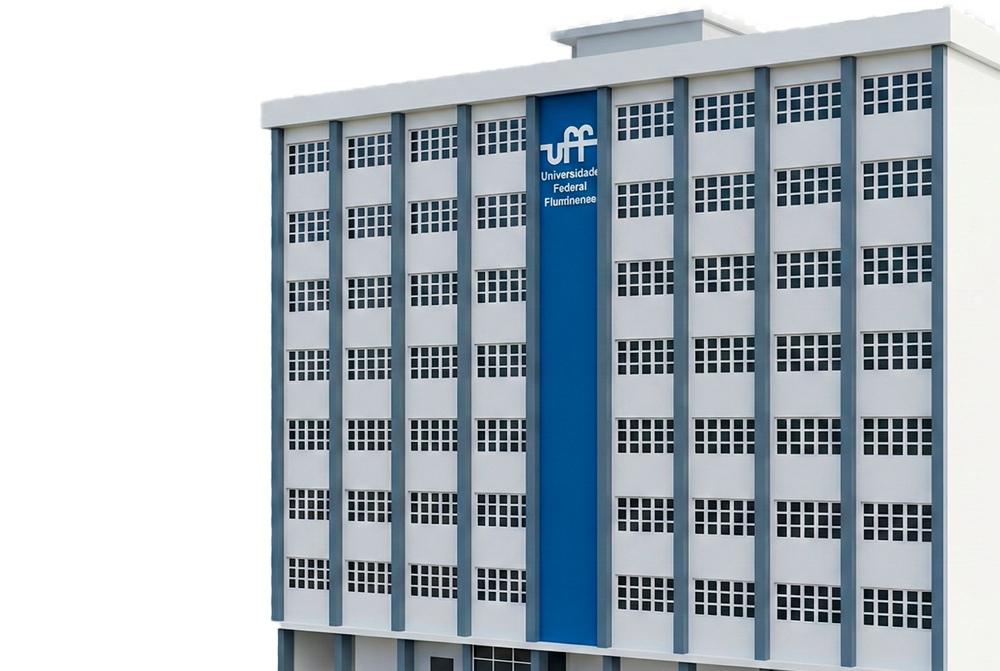

Pós-Graduação Médica Lato Sensu na Universidade Federal Fluminense
Treinamento clínico e cirúrgico em ambiente hospitalar terciário e de alta complexidade no Hospital Universitário Antônio Pedro (HUAP). Formação médica continuada em 13 especialidades sob preceptoria docente da Faculdade de Medicina da UFF.

Uma das mais respeitadas faculdades de medicina do Brasil, pioneira na formação de especialistas.
Cursos vinculados ao MEC sem qualquer custo de mensalidade durante todo o período de formação.
Complexo hospitalar de referência no estado do RJ, com centros cirúrgicos, CTI e ambulatórios especializados.
Formação em clínica médica, pediatria, anestesiologia, radiologia, psiquiatria e áreas cirúrgicas.
Cronograma do Processo Seletivo 2027
Acompanhe os prazos oficiais de inscrição, provas e convocações da Faculdade de Medicina da UFF.
Período Regular de Inscrições Online
Envio de formulário e emissão da Guia de Recolhimento da União (GRU).
13 Especialidades Credenciadas
Treinamento médico especializado com prática direta no Hospital Universitário Antônio Pedro.
Estrutura do Processo Seletivo
O concurso para a pós-graduação médica da UFF é composto por duas fases públicas e de mérito comprovado.
Prova Escrita de Conhecimentos Médicos
Avaliação presencial de caráter eliminatório e classificatório. O conteúdo abrange conhecimentos da medicina geral ou da especialidade específica, conforme o programa bibliográfico oficial anexo ao edital.
Análise de Currículo Lattes & Entrevista
Avaliação individual realizada pelas bancas examinadoras dos professores titulares da especialidade médica escolhida, pontuando a trajetória acadêmica e profissional documentada.